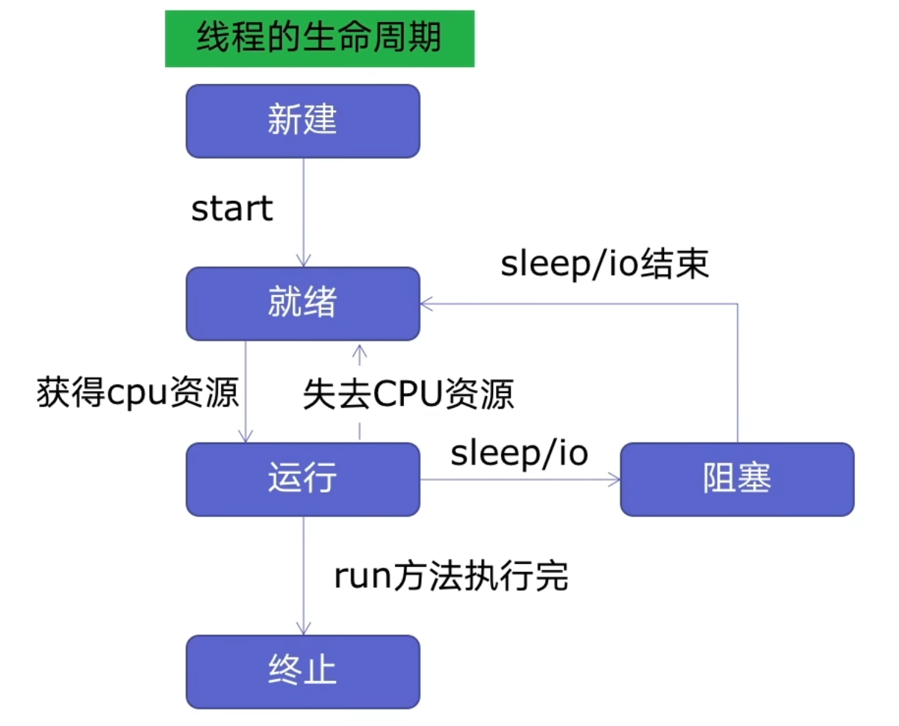
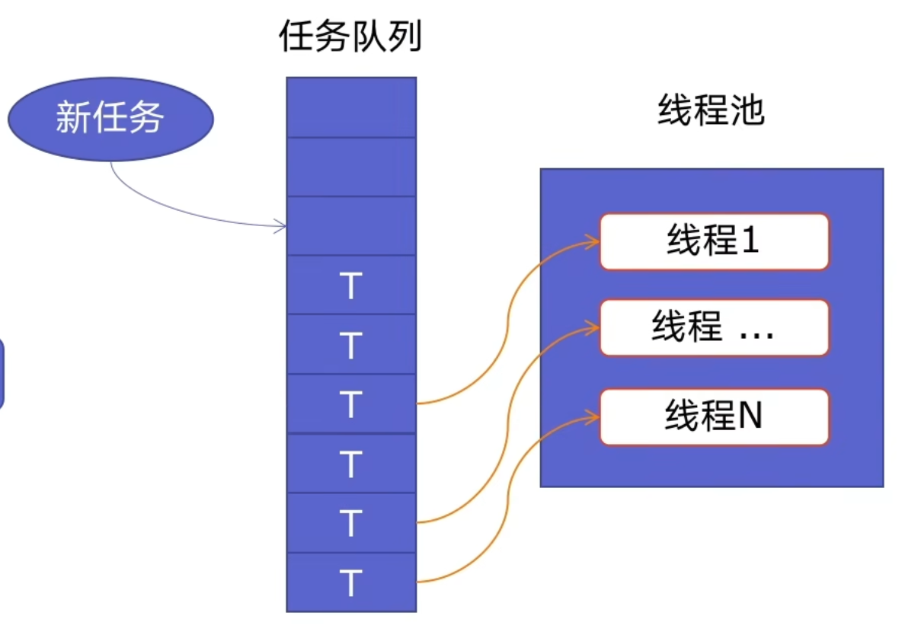
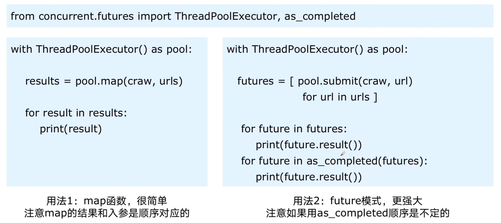

defsingle_threaded_crawler(): print("start single thread crawling...") for url in blog_spider.urls: blog_spider.craw(url) print("end single thread crawling...")
defmulti_threaded_crawler(): print("start multi thread crawling...") threads = [] for url in blog_spider.urls: threads.append( threading.Thread(target=blog_spider.craw, args=(url, )) )
for thread in threads: thread.start()
for thread in threads: thread.join()
print("end multi thread crawling...")
if __name__ == '__main__': with BenchmarkThread(): single_threaded_crawler()
with BenchmarkThread(): multi_threaded_crawler()
结果
1 2 3 4 5 6 7 8 9 10 11 12 13
start single thread crawling... ... https://www.cnblogs.com/#p49 71620 https://www.cnblogs.com/#p50 71620 end single thread crawling... consume: 17.035787105560303
start multi thread crawling... ... https://www.cnblogs.com/#p12 71620 https://www.cnblogs.com/#p4 71620 end multi thread crawling... consume: 1.0366919040679932
defdraw(account, amount): with lock: # adding a lock to a thread if account.balance >= amount: time.sleep(0.1) # blocking can lead to thread switching print(threading.current_thread().name, "withdraw money successfully") account.balance -= amount print(threading.current_thread().name, "balance", account.balance)
if __name__ == '__main__': account = Account(1000) ta = threading.Thread(target=draw, args=(account, 800), name="ta") tb = threading.Thread(target=draw, args=(account, 800), name="tb")
ta.start() tb.start()
结果
1 2 3
ta withdraw money successfully ta balance 200 tb withdrawal failure insuffcient balance
线程池
线程池的原理
使用线程池的好吃
ThreadPoolExecutor的使用语法
使用线程池改造爬虫程序
使用线程池本身不需要加锁，但在访问和修改共享数据时可能需要使用锁或其他同步机制来确保线程安全
线程池的原理

因为新建线程系统需要分配资源、终止线程系统需要回收资源
那么如果可以重用线程，则可以减去新建/终止的开销

线程池本身为提前预先建好的线程，这些线程会被重复的使用、
当有新任务时先放入任务队列，线程池里的线程会挨个取队列里的线程，依次执行
当没有任务时，回到线程池，并不会被销毁，等待下一个任务到来
使用线程池的好处
提升性能：因为减去了大量新建、终止线程的开销，重用了线程资源
适用场景：适合处理突发性大量请求或需要大量线程完成的任务，但实际任务处理时间较短
防御功能：能有效避免系统因为创建线程过多，而导致系统负荷过大相应变慢等问题
代码优势：使用线程池的语法比自己新建线程执行线程更加简洁
ThreadPoolExecutor的使用语法

1 2 3 4 5 6
from concurrent.futures import ThreadPoolExecutor, as_completed
with ThreadPoolExecutor() as pool: results = pool.map(craw, urls) # 提前把urls都准备好，进行全部的执行 for result im results: print(result)
用法1：map 函数，很简单
注意 map 的结果和入参是顺序对应的
1 2 3 4 5 6 7 8 9 10
from concurrent.futures import ThreadPoolExecutor, as_completed
with ThreadPoolExecutor() as pool: futures = [pool.submit(craw, url) for url in urls] for future in futures: # 挨个等待每一个按顺序的结束，进行返回和打印 print(future.result()) for future in as_completed(futures): # 不管里面那个任务先执行完了，它就会先进行返回 print(future.result())
用法2：future模式，更强大
注意如果使用 as_completed 顺序是不定的
使用线程池改造爬虫程序
thread_pool.py
使用pool.map 、 futures和as_completed
1 2 3 4 5 6 7 8 9 10 11 12 13 14 15 16 17 18 19
from concurrent.futures import ThreadPoolExecutor import blog_spider
with ThreadPoolExecutor() as pool: htmls = pool.map(blog_spider.craw, blog_spider.urls) htmls = list(zip(blog_spider.urls, htmls)) for url, html in htmls: print(url, len(html))
print("craw over")
with ThreadPoolExecutor() as pool: futures = {} for url, html in htmls: future = pool.submit(blog_spider.parse, html) futures[future] = url
for future, url in futures.items(): print(url, future.result())
可以看出是顺序执行的，下面看看使用futures.as_completed
1 2 3 4 5 6 7 8 9 10 11 12 13 14 15 16 17 18 19
from concurrent.futures import ThreadPoolExecutor import blog_spider
with ThreadPoolExecutor() as pool: htmls = pool.map(blog_spider.craw, blog_spider.urls) htmls = list(zip(blog_spider.urls, htmls)) for url, html in htmls: print(url, len(html))
print("craw over")
with ThreadPoolExecutor() as pool: futures = {} for url, html in htmls: future = pool.submit(blog_spider.parse, html) futures[future] = url
for future, url in futures.items(): print(url, future.result())
defis_prime(n): if n < 2: returnFalse if n == 2: returnTrue if n % 2 == 0: returnFalse sqrt_n = int(math.floor(math.sqrt(n))) for i inrange(3, sqrt_n + 1, 2): if n % i == 0: returnFalse returnTrue
defsingle_thread(): for number in PRIMES: is_prime(number)
defmulti_thread(): with ThreadPoolExecutor() as pool: pool.map(is_prime, PRIMES)
defmulti_process(): with ProcessPoolExecutor() as pool: pool.map(is_prime, PRIMES)
if __name__ == '__main__': with Benchmark("single thread"): single_thread()
with Benchmark("multi thread"): multi_thread()
with Benchmark("multi process"): multi_process()
结果
1 2 3 4 5 6
single thread consume: 22.90883493423462 multi thread consume: 22.713069915771484 multi process consume: 4.842185974121094
defis_prime(n): if n < 2: returnFalse if n == 2: returnTrue if n % 2 == 0: returnFalse sqrt_n = int(math.floor(math.sqrt(n))) for i inrange(3, sqrt_n + 1, 2): if n % i == 0: returnFalse returnTrue
@app.route("/is_prime/<numbers>") defapi_is_prime(numbers): number_list = [int(x) for x in numbers.split(",")] results = process_pool.map(is_prime, number_list) return json.dumps(dict(zip(number_list, results)))
if __name__ == '__main__': app.run()
请求路径http://127.0.0.1:5000/is_prime/1,2,3,4
结果
1
{"1": false, "2": true, "3": true, "4": false}
异步IO：anyncio
在一个线程中如果遇到IO等待时间，线程不会傻傻等待，利用空闲的时候去干其他事情
语法
1 2 3 4 5 6 7 8 9 10 11 12 13 14
import asyncio
# 定义协程 asyncdefmyfunc(url): await get_url(url)
# 创建task列表 tasks = [loop.create_task(myfunc(url)) for url in urls]
start end 1 1 2 2 {<Task finished name='n1' coro=<func() done, defined at test.py:3> result='返回值'>, <Task finished name='n2' coro=<func() done, defined at test.py:3> result='返回值'>}
asyncio.Future对象
A Futureis a special low-level awaitable object that represents an eventual result of an asynchronous operation.
import time from concurrent.futures import Future from concurrent.futrues.thread import ThreadPoolExecutor from concurrent.futrues.process import ProcessPoolExecutor
import time import asyncio import concurrent.futures
deffunc1(): # 某个耗时操作 time.sleep(2) return"SB"
asyncdefmain(): loop = asyncio.get_running_loop()
# 1. Run in the default loop's executor ( 默认ThreadPoolExecutor ) # 第一步：内部会先调用 ThreadPoolExecutor 的 submit 方法去线程池中申请一个线程去执行func1函数，并返回一个concurrent.futures.Future对象 # 第二步：调用asyncio.wrap_future将concurrent.futures.Future对象包装为asycio.Future对象。 # 因为concurrent.futures.Future对象不支持await语法，所以需要包装为 asycio.Future对象 才能使用。 fut = loop.run_in_executor(None, func1) result = await fut print('default thread pool', result)
# 2. Run in a custom thread pool: # with concurrent.futures.ThreadPoolExecutor() as pool: # result = await loop.run_in_executor( # pool, func1) # print('custom thread pool', result)
# 3. Run in a custom process pool: # with concurrent.futures.ProcessPoolExecutor() as pool: # result = await loop.run_in_executor( # pool, func1) # print('custom process pool', result)